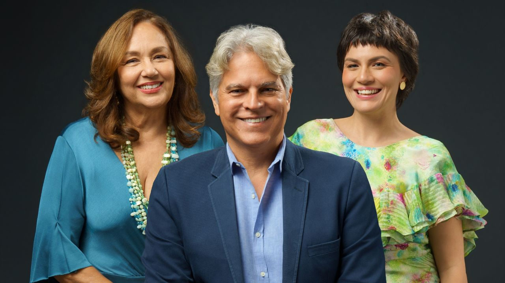

Musical-tributo a Vinicius de Moraes chega ao Sesc Santo Amaro em agosto

Com Graziela Medori, Jane Duboc e Juan Alba, “É Melhor Ser Alegre Que Ser Triste” homenageia o Poetinha em três apresentações
As canções e poemas de Vinicius de Moraes ganham nova leitura no palco do Sesc Santo Amaro com “É Melhor Ser Alegre Que Ser Triste”, musical-tributo ao Poetinha que será apresentado de 7 a 9 de agosto. O espetáculo reúne as cantoras Graziela Medori e Jane Duboc e o ator e cantor Juan Alba, sob direção geral de Fernando Cardoso e direção musical de Ogair Júnior.
A montagem integra as comemorações de 30 anos da Mesa2, criada por Fernando Cardoso e Roberto Monteiro, e dá continuidade à pesquisa da produtora sobre grandes nomes da música brasileira. Depois de trabalhos como “Palavra de Mulher”, homenagem aos 70 anos de Chico Buarque, o novo espetáculo se volta à obra de Vinicius e de seus parceiros.
No repertório, estão canções como “Eu Sei Que Vou Te Amar”, “Bom Dia, Tristeza”, “Chega de Saudade” e “Pra Que Chorar”, além de poemas como “Soneto da Separação”. As músicas são costuradas por fragmentos de histórias da trajetória de Vinicius e de parcerias com nomes como Tom Jobim, Baden Powell, Adoniran Barbosa, Carlos Lyra e Toquinho.
Em cena, o espetáculo propõe um passeio pela obra de um artista que transitou entre poesia, música, diplomacia, boemia, amizade e paixão. Mais do que organizar uma biografia linear, o roteiro, assinado por Fernando Cardoso e pela jornalista Ciça Corrêa, aproxima canções, poemas e episódios da vida do compositor para pensar como Vinicius transformou afetos em música popular.
O cenário faz referência às calçadas das praias cariocas, criando uma ambiência ligada ao imaginário do Rio de Janeiro e ao universo musical que marcou parte da produção do Poetinha. A condução narrativa fica a cargo de Juan Alba, enquanto Jane Duboc e Graziela Medori dividem as interpretações musicais.
A banda tem Ogair Júnior no piano e acordeon, Jorge Ervolini no violão e na guitarra, Robertinho Carvalho no contrabaixo e Giba Favery na bateria. A direção musical e os arranjos são assinados por Ogair Júnior.
Para Fernando Cardoso, a obra de Vinicius permanece porque soube transformar tristeza, desejo, amizade e encantamento em canções populares sem perder a força poética. O título do espetáculo vem de um dos versos mais conhecidos de “Samba da Bênção”, parceria de Vinicius de Moraes com Baden Powell, e resume o tom da homenagem: celebrar a alegria sem ignorar a melancolia que também atravessa sua obra.
A sessão de domingo, 9 de agosto, terá ainda um bate-papo com o trio de intérpretes, o diretor geral e o diretor musical do espetáculo.
Serviço
É Melhor Ser Alegre Que Ser Triste — tributo a Vinicius de Moraes
Idealização e direção geral: Fernando Cardoso
Roteiro: Ciça Corrêa e Fernando Cardoso
Direção musical e arranjos: Ogair Júnior
Elenco: Graziela Medori, Jane Duboc e Juan Alba
Realização: Mesa2 Produções
Temporada: de 7 a 9 de agosto de 2026
Local: Sesc Santo Amaro — Teatro
Endereço: Rua Amador Bueno, 505 — Santo Amaro, São Paulo — SP
Sessões:7 de agosto, sexta-feira, às 20h8 de agosto, sábado, às 20h9 de agosto, domingo, às 18h
Ingressos: R$ 40 inteira | R$ 20 meia | R$ 12 credencial plena
Vendas: site e bilheterias do Sesc SP
Duração: 90 minutos
Classificação indicativa: 12 anos
Acessibilidade: teatro acessível a cadeirantes e pessoas com mobilidade reduzida
Após a sessão de domingo, haverá bate-papo com Graziela Medori, Jane Duboc, Juan Alba, Fernando Cardoso e Ogair Júnior.
Ficha técnica
Idealização: Fernando Cardoso
Roteiro: Ciça Corrêa e Fernando Cardoso
Elenco: Graziela Medori, Jane Duboc e Juan Alba
Direção musical e arranjos: Ogair Júnior
Direção geral: Fernando Cardoso
Piano e acordeon: Ogair Júnior
Violão e guitarra: Jorge Ervolini
Contrabaixo: Robertinho Carvalho
Bateria: Giba Favery
Iluminação: Christiano Paes
Cenografia: Fernando Cardoso
Figurino: Fernando Cardoso e Guilherme Rodrigues
Fotos: Leekyung Kim
Programação visual: Alexandre Brandão
Operação de luz: Christiano Paes
Operação de som: Estúdio Loop
Direção de produção: Roberto Monteiro
Realização: Mesa2 Produções